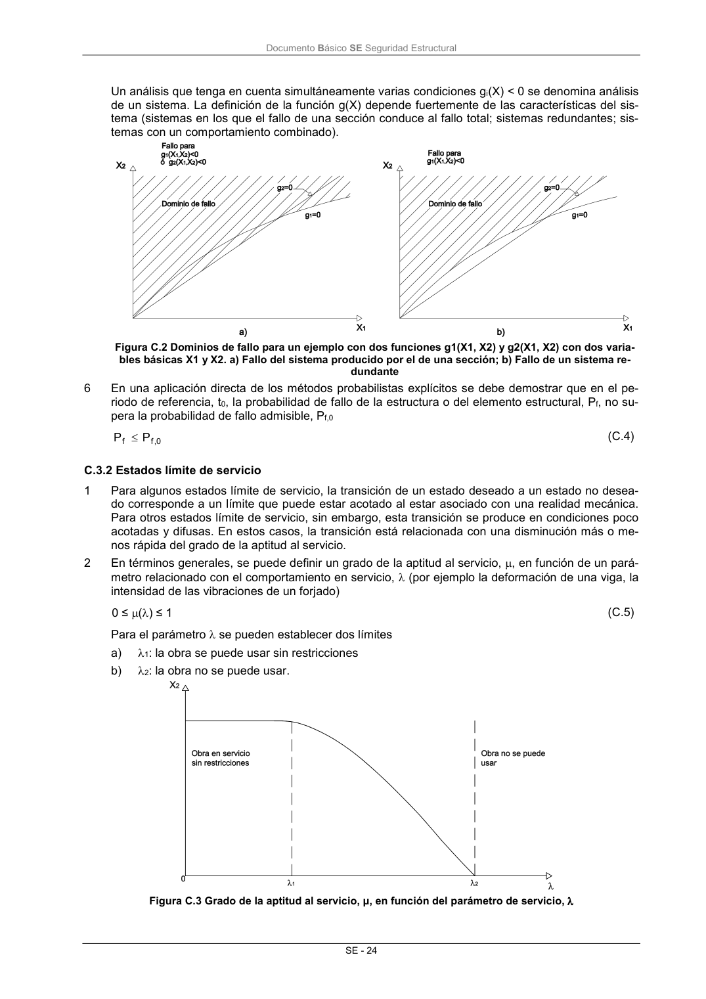

DB-SE · Página 30 · versión 2019-12-20
SHA256: ec1fbfc51b28c4d62667aec480585b76fe31727ccf1615015a5d2d2677763f8f · página física 30 de 45 · métodos de encabezado
solo si están cotejados.
Formatos: Markdown · JSON de bloques · PDF p. 30 · imagen PNG
Documento Básico SE Seguridad Estructural SE - 24 Un análisis que tenga en cuenta simultáneamente varias condiciones gi(X) < 0 se denomina análisis de un sistema. La definición de la función g(X) depende fuertemente de las características del sis- tema (sistemas en los que el fallo de una sección conduce al fallo total; sistemas redundantes; sis- temas con un comportamiento combinado). Figura C.2 Dominios de fallo para un ejemplo con dos funciones g1(X1, X2) y g2(X1, X2) con dos varia- bles básicas X1 y X2. a) Fallo del sistema producido por el de una sección; b) Fallo de un sistema re- dundante 6 En una aplicación directa de los métodos probabilistas explícitos se debe demostrar que en el pe- riodo de referencia, t0, la probabilidad de fallo de la estructura o del elemento estructural, Pf, no su- pera la probabilidad de fallo admisible, Pf,0 0 ,f f P P (C.4) C.3.2 Estados límite de servicio 1 Para algunos estados límite de servicio, la transición de un estado deseado a un estado no desea- do corresponde a un límite que puede estar acotado al estar asociado con una realidad mecánica. Para otros estados límite de servicio, sin embargo, esta transición se produce en condiciones poco acotadas y difusas. En estos casos, la transición está relacionada con una disminución más o me- nos rápida del grado de la aptitud al servicio. 2 En términos generales, se puede definir un grado de la aptitud al servicio, , en función de un pará- metro relacionado con el comportamiento en servicio, (por ejemplo la deformación de una viga, la intensidad de las vibraciones de un forjado) 0 ≤ () ≤ 1 (C.5) Para el parámetro se pueden establecer dos límites a) 1: la obra se puede usar sin restricciones b) 2: la obra no se puede usar. Figura C.3 Grado de la aptitud al servicio, μ, en función del parámetro de servicio,
